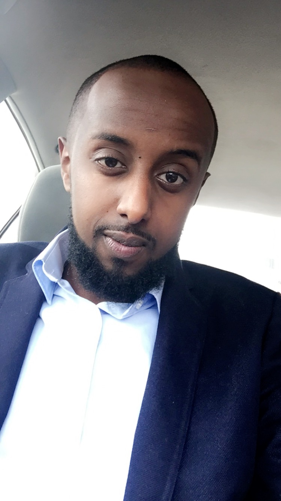

Abdullahi Abdulkadir Farah
6710 Kennaston dr Fridley MN 55432
Abdull050@gmail.com --- 224-522-4996
Career Summary
Independent professional with excellent communication skills seeking any, clinical/ education/ management
position. Highly organized and ambitious, willing to go the extra mile, and able to learn new concepts quickly in any environment.
Education
Everest College --- April 2015 --- Skokie,IL
Medical Assistant HIPAA/OSHA Trained
Metropolitan State University---June 2010-Dec 2014 --- St.Paul,MN
Genereal Education
Augsburg Fairview Medical Academy---June 2010 ---Minneapolis, MN
High School Diploma
Experience
Davita Dialysis---Dec 2015-Present---Chicago,IL
Clinical Research Assistant
Everest College---June 2014-May 2015---Chicago,IL
Receptionist
East Hennepin Auto Care---Sep 2009-Present---Minneapolis,MN
Shop Manager,Mechanic,Customer Service
Dr. Manish Jain, MD-Rheumatology---Mar 2015-Dec 2015---Chicago,IL
Key Skills, Core Competencies, and Strengths
- Organized and Professional as well as presenting a friendly, caring and positive attitude
- Customer focused, and team player
- Flexible, Quick learner and great ability to adapt to new and different environments
Clinical skills:
-
Electrocardiogram; centrifuge; pharmacology; autoclave; taking patient vitals; injections; Venipuncture ; laboratory skills; Diagnostic testing; Patient Preparation; suture and staple removal; surgical assistance; CPR Certified
Administrative skills:
-
Front desk receptionist; office finance; Medisoft; appointment scheduling, Record Keeping/filling, bookkeeping, Insurance verification, Microsoft office, medical billing, medical office management, data entry, CPT & ICD-9 Coding.
Other Skills:
- Bilingual Fluent English & Somali
- Proficient in Office finance
- Microsoft Office